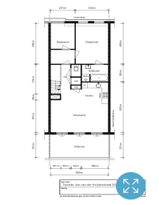

Luxe, ruim en zeer licht driekamerappartement (210m3/70m2) op de vierde verdieping met breed zonnig dakterras (15 m2) in de populaire Oude Pijp. Het betreft een in 2008 opgeleverd vernieuwbouw appartement met bijzondere architectuur welke leidt tot uitzonderlijk veel licht en ruimte. Gelegen in een rustige straat tussen de Van Woustraat en de Amstel. Het Sarphatipark bevindt zich aan het einde van de straat.

Indeling
Gezamenlijke entree op de begane grond met een privé trap vanaf de derde verdieping. Via hal met garderobe en zeer lichte & ruimtelijke opgang bereikt u de vierde etage. De opgang geeft directe toegang tot de aan de achterzijde gelegen riante woon- en eetkamer met open keuken alsmede het brede dakterras. De open keuken is modern en voorzien van alle inbouwapparatuur (o.a. combintie oven, koelkast, vaatwasser). De pupitres (ofwel champagnerekken) zijn zeer exclusief. Door de hoge plafonds, schuin oplopend van 2.50 tot ca. 3.60 meter hoogte, voelt het appartement bijzonder, ruimtelijk en comfortabel aan. In de hal is in een aparte kast de CV installatie gevestigd. Aan de voorzijde van de woning bevindt zich een mooie studeer/logeerkamer met dakkapel en een heerlijke slaapkamer met twee dakramen. Naast de slaapkamer bevindt zich een zeer nette badkamer met wastafel, ligbad en aparte douche.
Om de hoek van de Tweede Jan van der Heijdenstraat bevinden zich de Albert Cuypmarkt en de gezellige Utrechtsestraat. Tevens is het centrum van Amsterdam binnen enkele minuten bereikbaar. De Pijp biedt veel cultuur en volop uitgaansmogelijkheden.
GEÏNTERESSEERD?
Neem contact op met Tom tom@opses.co.uk